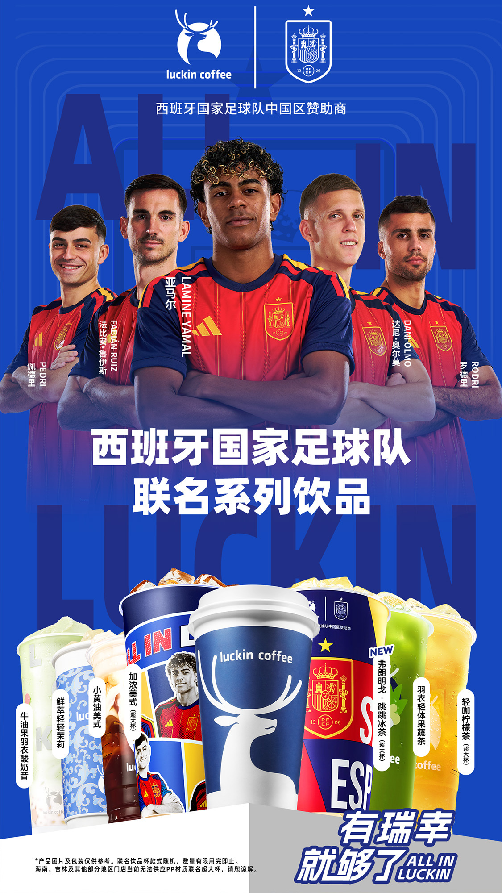
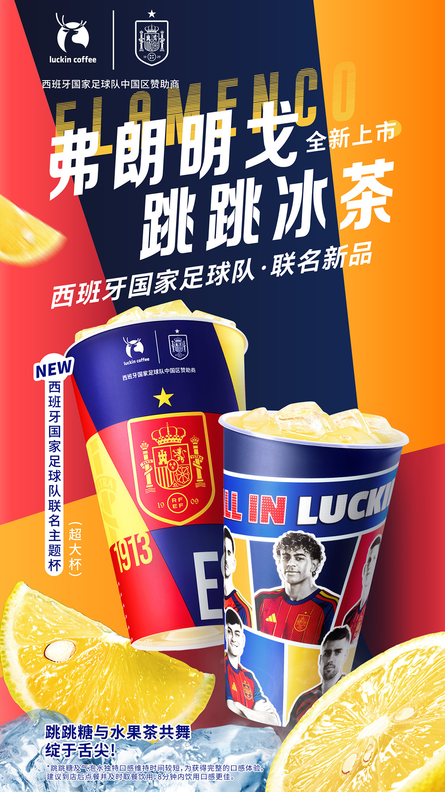
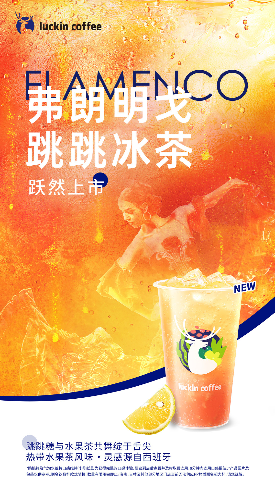
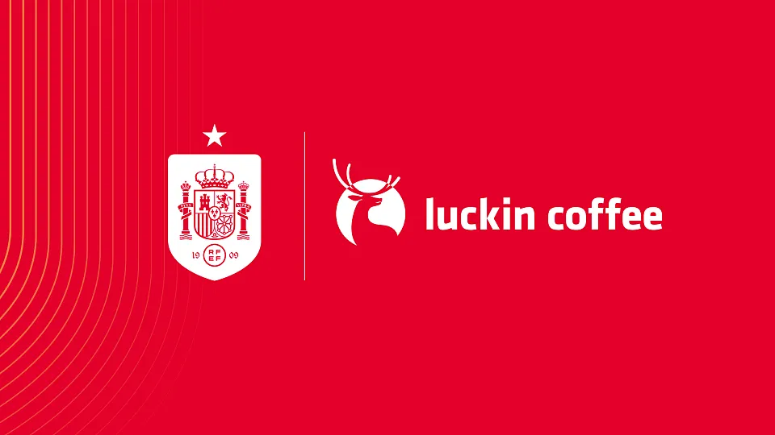

案例发生了什么



瑞幸成为西班牙国家队在中国的官方区域合作伙伴后，以弗朗明戈文化为产品灵感，推出跳跳冰茶、主题杯和球员阵容内容。
MARKETING KNOWLEDGE ROUTER · 营销知识路由器
营销启发卡
用三张卡片保留最值得记住、讨论和迁移的部分。 卡片底部按主题连接全站相关案例、经典方法与深度文章。
核心动作
用弗朗明戈而非抽象“足球热血”建立西班牙文化识别；把联名权益同步落到新品命名、饮品视觉、主题杯和球员阵容图。
传播与商业机制
以“西班牙国家队中国区合作 / 联名新品”为资源起点，进入球星/球队/授权内容、电商、门店、大小屏与海外渠道；结果优先观察搜索、到店、商品成交、会员沉淀与重点海外市场认知，不把曝光直接等同于销售。
可复用的方法
区域国家队合作要完成一次本土消费翻译：国家文化负责记忆，具体产品与门店物料负责兑现。
适用条件、风险与证据
- 先明确目标是国内动销、出海认知、渠道关系还是授权商品，而不是全部都做。
- 球星或球队的赛果只是放大器，必须准备常态内容和转化出口。
- 对授权范围、地域、肖像和商品库存建立可追溯台账。
核验记录可将已核动作作为内部判断基础；涉及投放规模、销售结果或合作细则时，仍应以品牌、平台或权利方的一手发布为准。 当前记录：已核（RFEF 官网 + 瑞幸官方微博）；素材状态：已归档 4 张瑞幸官方联名产品与 RFEF 公告图。
品牌与权威来源物料
这里只展示可追溯到品牌、权利方、官方账号或明确注明原始出处的真实物料；研究图卡不计入案例图片。

资料与来源
官方资料、结果数据与下一步
已验证事实
- 西班牙皇家足球协会于 2026 年 5 月 28 日公告，瑞幸咖啡成为西班牙男子国家队在中国的官方区域合作伙伴，用于面向中国球迷开展营销活动。
- 2026 年 6 月 15 日，瑞幸官方微博上线弗朗明戈·跳跳冰茶、西班牙国家队联名主题杯、球员阵容图和产品矩阵。
- 本页归档 3 张瑞幸官方微博产品图和 1 张 RFEF 公告首图，使“消费激活”与“权益定案”分别可追溯。
可追溯的结果
- 官方足协页可验证合作身份与中国市场范围；不披露赞助费、品类排他、活动数量或门店业务结果。
原始来源
- 西班牙皇家足球协会 RFEF · 2026-05-28Luckin Coffee 成为西班牙男子国家队在中国的官方区域合作伙伴
- luckincoffee 瑞幸咖啡官方微博 · 2026-06-15西班牙队邀你共赏弗朗明戈之舞：联名新品与包材
来源链接优先指向品牌、权利方或持权媒体官方页面；品牌自述数据按原始定义记录，不视作独立审计结果。